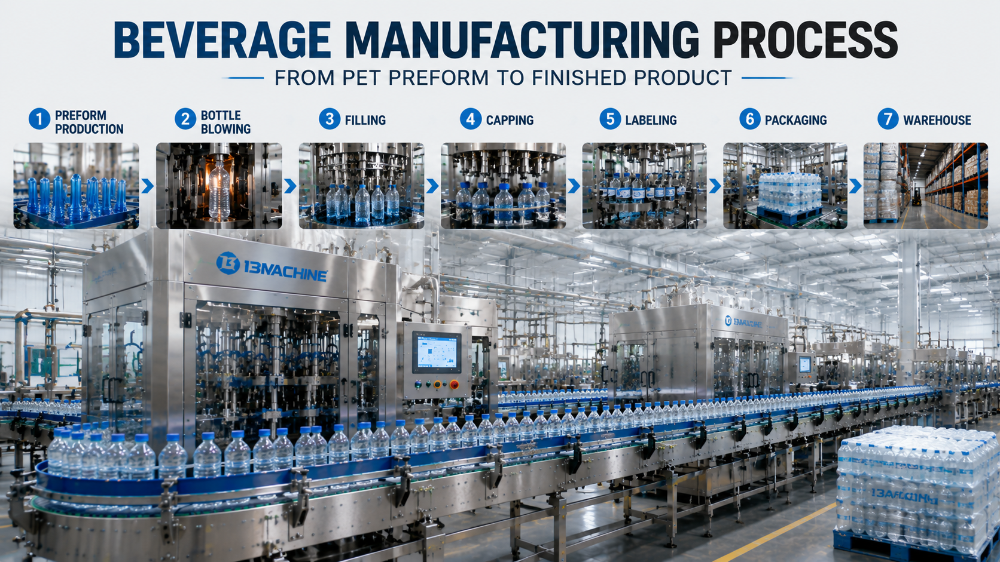

Complete Beverage Manufacturing Process Explained: From PET Preform to Finished Product

Summary
Understanding the complete beverage manufacturing process is essential for anyone planning to build, upgrade, or optimize a beverage factory.
A modern beverage production system is not only about filling bottles.
It is a complete manufacturing workflow that connects:
Raw material preparation
PET bottle production
Filling technology
Packaging automation
Warehouse logistics
The complete process usually includes:
PET Preform
↓
Bottle Blowing
↓
Filling
↓
Capping
↓
Labeling
↓
Packaging
↓
Warehouse Storage
↓
Distribution
This article explains the complete beverage manufacturing process, the role of each production stage, and how modern automated beverage factories integrate these processes into a highly efficient production system.
Technology
- Beverage Manufacturing Process Technology
- A modern beverage factory combines multiple technologies to transform raw materials into finished products.
- The complete production system includes:
- 1. PET Bottle Manufacturing Technology
- PET bottles are usually produced from PET preforms.
- Process:
- PET Resin
- ↓
- PET Preform Production
- ↓
- Heating
- ↓
- Stretch Blow Molding
- ↓
- Finished Bottle
- 2. Filling Technology
- After bottle production
- beverages are filled into containers.
- Filling technology depends on:
- Beverage type
- Hygiene requirements
- Production speed
- Common filling solutions include:
- Normal filling
- Hot filling
- Aseptic filling
- Carbonated filling
- 3. Packaging Automation Technology
- After filling
- finished bottles go through:
- Labeling
- Packaging
- Palletizing
- Automation improves:
- Efficiency
- Consistency
- Production speed
- 4. Smart Factory Technology
- Modern beverage factories increasingly integrate:
- PLC control
- MES systems
- Production monitoring
- Automated logistics
- creating a complete digital manufacturing environment.
Challenge
Why Understanding the Beverage Manufacturing Process Matters
Many companies planning beverage production focus mainly on individual machines.
However, successful beverage manufacturing depends on the entire production workflow.
A beverage factory must consider:
Material flow
Production efficiency
Quality control
Automation integration
Factory layout
Challenge 1: Complex Production Flow
A beverage product passes through many stages:
From raw materials
↓
To finished goods
Each stage must work together.
Challenge 2: Equipment Compatibility
Different systems must communicate effectively:
Bottle production
Filling
Packaging
Warehouse
Poor integration can cause:
Production delays
Lower efficiency
Increased operating cost
Challenge 3: Quality Control Throughout Production
Quality is not created only during filling.
It starts from:
Bottle production
Product processing
Filling accuracy
Packaging quality
Challenge 4: Factory Layout Optimization
A poor layout creates:
Longer transportation routes
More material handling
Lower efficiency
Professional factory planning is critical.
Solution
Complete Beverage Manufacturing Process Explained
A modern beverage production line follows a continuous manufacturing workflow.
Step 1: PET Preform Production
What Is a PET Preform?
A PET preform is the initial plastic component used to create beverage bottles.
It looks like a small plastic tube before bottle expansion.
Process:
PET Raw Material
↓
Injection Molding
↓
PET Preform
Importance:
High-quality preforms affect:
Bottle strength
Appearance
Production stability
Step 2: Bottle Blowing Process
The PET preform is transformed into a finished bottle.
Process:
PET Preform Heating
↓
Stretching
↓
High-pressure Air Blowing
↓
Finished PET Bottle
Benefits:
Lower transportation cost
On-demand bottle production
Better factory integration
Step 3: Beverage Filling Process
After bottle production, beverages enter the filling stage.
Filling Process Includes:
Bottle Feeding
↓
Cleaning / Preparation
↓
Liquid Filling
↓
Quality Control
Filling Accuracy Is Critical
Poor filling control can cause:
Product waste
Customer complaints
Production losses
Step 4: Capping Process
After filling:
Bottle
↓
Cap Feeding
↓
Automatic Capping
↓
Sealed Product
The capping system ensures:
Proper sealing
Product protection
Leak prevention
Step 5: Labeling Process
Labels provide:
Brand information
Product identification
Regulatory information
Common labeling technologies:
Sleeve labeling
Adhesive labeling
Wrap-around labeling
Step 6: Packaging Process
Finished bottles are grouped and prepared for transportation.
Packaging methods include:
Film wrapping
Cartoning
Case packing
Automation improves:
Speed
Packaging consistency
Labor efficiency
Step 7: Warehouse Storage
Finished products move into warehouse systems.
Modern factories may use:
Conveyor systems
Robotic palletizers
AGV systems
ASRS warehouses
Benefits:
Better inventory management
Reduced manual handling
Higher logistics efficiency
Workflow & Layout
Complete Beverage Production Workflow
PET Preform
↓
Bottle Blow Molding
↓
Bottle Conveying
↓
Beverage Filling
↓
Capping
↓
Inspection
↓
Labeling
↓
Packaging
↓
Palletizing
↓
Automated Warehouse
↓
Distribution
Factory Layout Planning
A professional beverage factory usually includes:
⭐ Production Area
Includes:
Processing
Bottle production
Filling
Packaging
⭐ Quality Control Area
For:
Product testing
Inspection
Process monitoring
⭐ Logistics Area
Includes:
Raw material storage
Finished product warehouse
⭐ Automation Area
Includes:
Control systems
Data management
Smart logistics
Results & ROI
- Business Benefits of a Complete Automated Beverage Production Process
- ⭐1. Higher Production Efficiency
- Integrated production reduces:
- Waiting time
- Manual transfer
- Production interruptions
- ⭐2. Lower Operating Cost
- Automation helps reduce:
- Labor requirements
- Material handling cost
- Production waste
- ⭐3. Better Product Quality
- Standardized processes improve:
- Filling accuracy
- Packaging consistency
- Product reliability
- ⭐4. Better Factory Utilization
- Optimized workflow improves:
- Space usage
- Material movement
- Production organization
- ⭐5. Easier Production Expansion
- A well-designed production system supports:
- Capacity upgrades
- New beverage categories
- Automation expansion
- 📌 Example:
- A traditional factory:
- Separate machines
- ↓
- Manual connection
- ↓
- More labor dependency
- Modern factory:
- Integrated production system
- ↓
- Automated workflow
- ↓
- Digital management
- ↓
- Higher efficiency
Equipment List
- A complete beverage manufacturing system may include:
- ⭐PET Bottle Production
- PET preform handling system
- Blow molding machine
- Bottle conveyor system
- ⭐Beverage Processing
- Water treatment system
- Mixing system
- CIP system
- Sterilization system
- ⭐Filling System
- Filling machine
- Capping machine
- Inspection system
- ⭐Packaging System
- Labeling machine
- Shrink wrapping machine
- Cartoning machine
- Palletizing robot
- ⭐Logistics Automation
- Conveyor system
- AGV
- ASRS warehouse
- ⭐Digital System
- PLC control
- SCADA
- MES integration
Project Overview / Opening
From PET Preform to Finished Beverage: The Complete Manufacturing Journey
Every bottle of beverage goes through a carefully designed industrial process.
Behind a simple bottle is a complete manufacturing ecosystem involving:
Material science
Mechanical engineering
Automation technology
Quality control
Logistics management
Modern beverage factories are moving toward integrated production systems where every stage works together.
Understanding this complete process helps investors and factory managers make better decisions when planning new production facilities.
Key Points
- Seven Main Stages of Beverage Manufacturing
- 1. PET Preform Production
- Creates the starting material for bottles.
- 2. Bottle Blow Molding
- Transforms preforms into finished containers.
- 3. Filling
- Adds beverage products with controlled accuracy.
- 4. Capping
- Ensures product sealing and protection.
- 5. Labeling
- Adds brand and product information.
- 6. Packaging
- Prepares products for transportation.
- 7. Warehouse Automation
- Manages finished products efficiently.
Implementation / Workflow
How to Build a Complete Beverage Production System
⭐Step 1: Define Product Requirements
Determine:
Beverage category
Bottle size
Production capacity
⭐Step 2: Design Manufacturing Process
Plan:
Process flow
Equipment selection
Factory layout
⭐Step 3: Select Production Equipment
Evaluate:
Technical capability
Efficiency
Expansion potential
⭐Step 4: Integrate Automation Systems
Connect:
Machines
Control systems
Data platforms
⭐Step 5: Production Commissioning
Complete:
Equipment testing
Installation
Operator training
Customer Value / Results
Understanding the complete beverage manufacturing process helps companies:
📌 Make Better Investment Decisions
Choose suitable technology based on production goals.
📌 Reduce Project Risk
Avoid incompatible equipment selection.
📌 Improve Factory Efficiency
Create optimized production workflows.
📌 Build Scalable Manufacturing Systems
Support future business growth.
📌 Achieve Smart Factory Goals
Prepare for digital manufacturing transformation.
Conclusion / Next Step
The beverage manufacturing process is much more than filling bottles. It is a complete industrial system connecting bottle production, filling, packaging, automation, and logistics.
A successful beverage factory requires careful planning of:
Production technology
Equipment selection
Factory layout
Automation strategy
We help manufacturers worldwide design, source, integrate, and deliver industrial automation projects from China's manufacturing ecosystem.
Our capabilities include:
Beverage production line design
PET bottle production solutions
Filling and packaging automation
Smart factory integration
Automated warehouse systems
Complete industrial project coordination
Whether you are planning a new beverage manufacturing plant or upgrading an existing production line, our team can help develop a reliable and scalable factory solution.
📩 Contact us through our website Contact page and share your beverage production requirements.
SEO Title
Complete Beverage Manufacturing Process Explained: From PET Preform to Finished Product
SEO Description
Understanding the complete beverage manufacturing process is essential for anyone planning to build, upgrade, or optimize a beverage factory.
A modern beverage production system is not only about filling bottles.
It is a complete manufacturing workflow that connects:
Raw material preparation
PET bottle production
Filling technology
Packaging automation
Warehouse logistics
The complete process usually includes:
PET Preform
↓
Bottle Blowing
↓
Filling
↓
Capping
↓
Labeling
↓
Packaging
↓
Warehouse Storage
↓
Distribution
This article explains the complete beverage manufacturing process, the role of each production stage, and how modern automated beverage factories integrate these processes into a highly efficient production system.
Related Blog
Start with Your Business Challenge
Tell us about your warehouse, factory, or production requirements. We'll help you explore practical automation solutions and relevant project references.